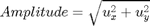
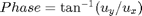
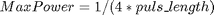
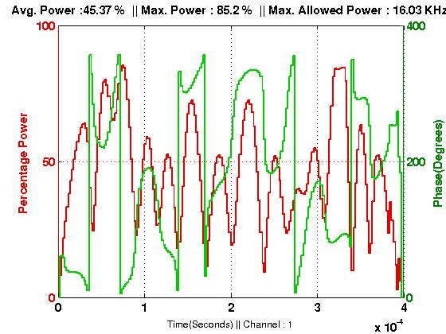

FileName : ampwr
Contents
Description
Plots the variation of power and phase of a GRAPE pulse. Seperate plot is displayed for different channels. The top of the plot shows percentage of average and maximum power used by the GRAPE pulse along with the total maximum power allowed.
The controls ux and uy of each channel are used to calculate the power and phase.
 and  the amplitude is then scaled with respect to the maximum power allowed calculated using puls_length. .
Command
ampwr(GRinfo,puls_length)
GRinfo : Variable in which all the information of grape pulse is stored.
puls_length : length of the calibirated pi/2 pulse, input as a matrix for multiple nuclei. Caution : input according to spinlist of the GRAPE pulse
Example Output
Shown below is an example plot.

The red plot refers to power with axis ticks on the left, and the green plot refers to phase with axis ticks on the right.
Notice the variation at the starting and end in power this is due to the penalty function which does not allow high powers at the starting and ending of a pulse.
function ampwr(GRinfo,puls) global gra gra=GRinfo; spinlist=gra.spinlist; amp=cell(1,length(spinlist)); scaled_amp=cell(1,length(spinlist)); average_power = zeros(1,length(spinlist)); max_power = zeros(1,length(spinlist)); phi=cell(1,length(spinlist)); a1=0:gra.del_t:gra.T; a2=gra.del_t:gra.del_t:gra.T-gra.del_t; xplot_axis=sort([a1 a2]); for k=1:length(spinlist) amp{k}=sqrt((gra.u(:,k)/(2*pi)).^2 + (gra.u(:,k+length(spinlist))/(2*pi)).^2); scaled_amp{k}=amp{k}*100/(1/4/puls(k)); average_power(k) = sum(scaled_amp{k})/length(scaled_amp{k}); max_power(k) = max(scaled_amp{k}); phi{k}=(atan2(gra.u(:,k+length(spinlist)),gra.u(:,k))); phi{k}=mod(phi{k},2*pi)*180/pi; phi{k}=reshape(repmat(phi{k},1,2)',1,2*length(gra.u))'; scaled_amp{k}=reshape(repmat(scaled_amp{k},1,2)',1,2*length(gra.u))'; figure [AX H1 H2]=plotyy(xplot_axis,scaled_amp{k},xplot_axis,phi{k}); xlabel(['Time(Seconds) || Channel : ',num2str(k)]) set(get(AX(1),'Ylabel'),'String','Percentage Power','color',[.9 0 0],'FontSize',12,'FontWeight','bold') set(get(AX(2),'Ylabel'),'String','Phase(Degrees)','color',[ 0 .5 0],'FontSize',12,'FontWeight','bold') set(AX(1),'ycolor',[.9 0 0],'FontSize',12,'FontWeight','bold') set(AX(2),'ycolor',[0 0.5 0],'FontSize',12,'FontWeight','bold') set(H1,'color',[0.9 0 0],'LineWidth',2) set(H2,'color',[0 0.8 0],'LineWidth',2) title(['Avg. Power :',num2str(round(average_power(k)*100)/100),' % || Max. Power : ',num2str(round(max_power(k)*100)/100),... ' % || Max. Allowed Power : ',num2str(round(1/4/puls(k)*1e-3*100)/100),' KHz']) grid on end